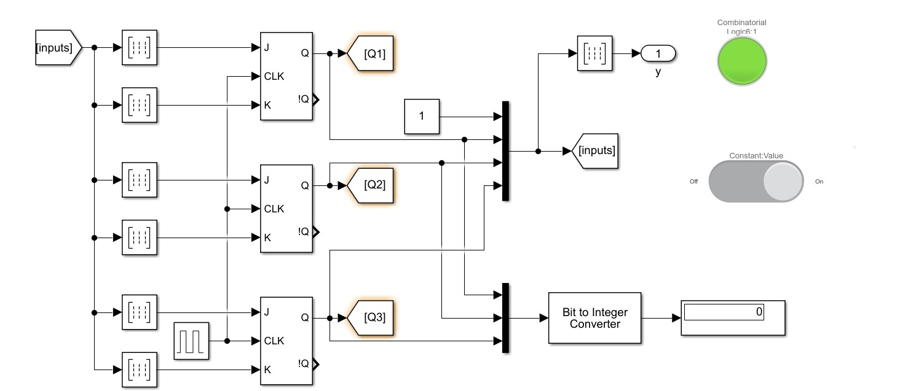
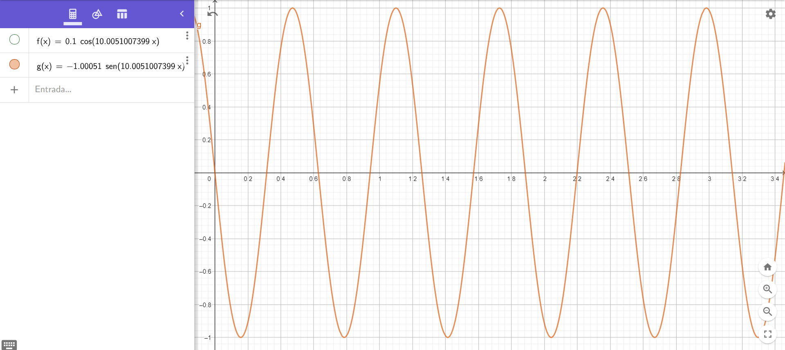
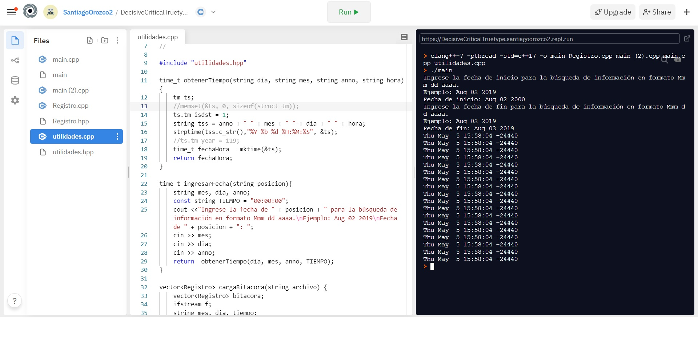

Santiago Orozco Quintero
Ciudad de México
123456789
Loremhipsum@correo.algo
Perfil
Informático y entusiasta de la computación, con gran facilidad para adaptarme a horarios y equipos de trabajo, experiencia en programación y conocimientos de diseño, manejo de paquetes de Office de nivel intermedio y avanzado, fluido en el idioma ingles con certificación Toefl, experiencia en el área de atención a clientes por vía telefónica y en la automatización de procesos mediante el uso de herramientas de Microsoft.
Hobbies
- Comics
- Series de animación
- Juegos de mesa
Series o películas favoritas
| Nombre | Formato |
|---|---|
| The tatami galaxy | Serie de television |
| Ringworld | Serie de libros |
| Megamente | Pelicula |
Experiencia
Asistente en la empresa de desarrollo de software industrias futuro:
Revisar las bases de datos en busca de problemas y pruebas de software en busca de bugs o problemas con el funcionamiento
Trabajador para la empresa VvVv:
Automatizar el proceso de envío y recepción de formularios mediante el uso de powerautomate
Lenguajes de programación y nivel de dominio
| Lenguaje | Dominio |
|---|---|
| Python | Intermedio |
| C++ | Intermedio |
| Matlab | Intermedio |
| Javascript | Bajo |
Portafolio
-
Creación de una red de sensores interconectados creado en diciembre del 2020
Esta red generaba datos a partir de unos receptores de CO2 los cuales posteriormente eran subidos a una base de datos
 -
Simulador del movimiento de un paracaidista septiembre del 2020
Mediante esta simulación matemática se podía apreciar el movimiento de un paracaidista a lo largo de un tiempo determinado
 